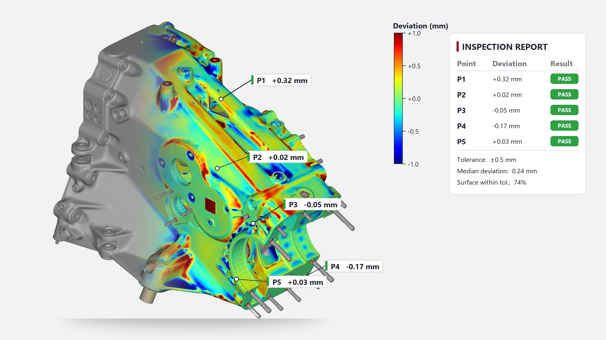

Disclosure: VShark Solutions is one of the providers in this market. The checks below apply to any provider, including us.
8 checks before you pick a 3D scanning service in Coimbatore
- What are you scanning, and how big is it? A small machined part, a casting, a vehicle body and a plant room need different scanners. Ask which equipment will be used for your size and surface (shiny, dark or black parts may need a different method).
- What accuracy do you need? Reverse engineering a worn spare needs less than checking a fit-critical tolerance. Ask what accuracy the equipment is rated for, and how it is verified. Scanner ratings describe the device; the final result also depends on the part, the setup and the cleanup.
- What do you receive? A mesh (STL, PLY) is enough for printing and visual checks. Manufacturing and redesign need editable CAD (STEP, IGES, Parasolid). Inspection needs a report. Ask for the formats in writing.
- Is an inspection report included? If you are comparing a made part against CAD, ask for a deviation colour map and dimensions. Ours is a PDF with a deviation colour map, dimensions and GD&T callouts.
- Can the work be done at your plant? Heavy dies, large castings and fixed machines are easier to scan where they stand. Ask about travel and accommodation charges before you book.
- How long will it take? Scanning time depends on size and cleanup, so it is quoted per job. Our inspection reports are normally delivered in 2 to 3 days.
- How is the price built? Most providers quote per hour or per job. Ask what the hour includes (scanning only, cleanup, CAD, travel) and how many revisions are included.
- Can they show similar work? Ask for examples of the same kind of part. Only trust samples the provider is allowed to show.
Which service do you need?
| You have | You need | Typical output |
|---|---|---|
| A part with no drawing | Reverse engineering (scan to CAD); see reverse engineering services in India and spare part with no drawing | Editable STEP CAD |
| A made part to check against CAD | Inspection by 3D scanning or CMM arm | Deviation colour map and report |
| A worn part you only need to see or print | 3D scanning | STL mesh |
| A building, plant or large structure | Laser scanning / scan to BIM | Point cloud, Revit model |

What does 3D scanning cost in Coimbatore?
Cost depends on size, surface, accuracy, cleanup and location, so we quote per job: quote on request. Send a photo and a short description of your part and we will reply with a written quote. Travel and accommodation are extra for on-site work. Ask any provider you compare for the same breakdown. For a deeper look at the two inspection methods, read 3D scanning vs CMM inspection.

Is it cheaper to buy a 3D scanner or hire a scanning service?
Hire a service if you need a few scans a year. Buy a scanner if you scan every week and have a trained operator. A simple check: divide the scanner price by the hourly service rate to see how many service hours the purchase equals, and remember that it leaves out software, training, operator time, calibration and upkeep, which change the answer. VShark is also the India distributor of JINUOSH Vertex 3D scanners, so we can help with either route; see our JINUOSH Vertex page.
Why teams in Coimbatore ask VShark
- Services from Coimbatore: 3D scanning, reverse engineering, scan to CAD, inspection and CMM arm inspection, at our facility or on site in India and the UAE. We serve Coimbatore, Tamil Nadu, India and the UAE.
- We also distribute JINUOSH Vertex handheld blue-laser scanners, rated up to 0.020 mm by the maker (a scanner specification, not a guarantee for every part).
- Editable CAD in STEP, IGES or Parasolid, delivered in your CAD software's format.
- Quotes per job, in writing.
Send a photo and a short description of your part for a quote or email info@vsharksolutions.com.
Last reviewed: